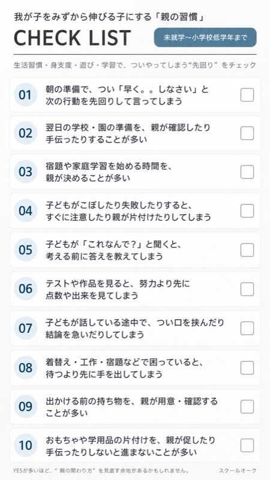
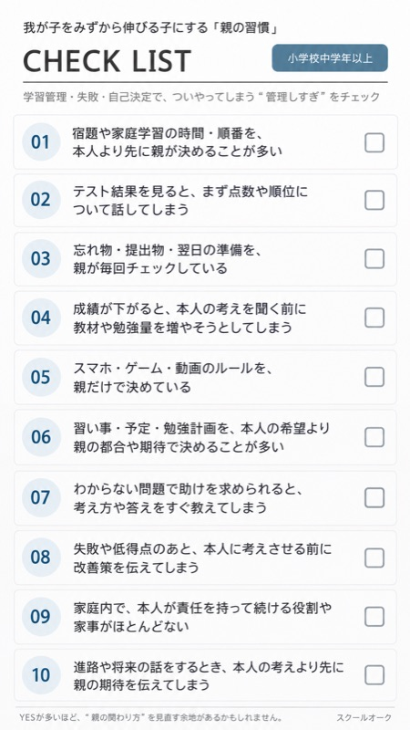

「勉強しなさい」と
言わなくても、
自分から動く子へ。
子どもを変えるのではなく、親の「声かけ・環境・手の離し方」を整える。3人の子どもを東大に送り出した母・高木美保が、ご家庭に合わせてお伝えします。
LINEに登録すると、お子さんの学年に合わせたチェックリストをすぐにお送りします（無料）。
Everyday
今日こそ、言わないつもりだったのに。
愛情があるからこそ、言い続けてしまう。でも言えば言うほど、子どもは動かなくなる。
それは、あなたのせいではありません。「どう関わればいいか」を、家庭に合わせて教わる機会がなかっただけです。
What we do
変えるのは、「親の行動」から。
気合いや根性で「怒らないようにする」のではなく、具体的な行動をひとつずつ変えていきます。
01
声かけを変える
口ぐせをひとつ特定し、わが子に合う言葉へ。反応を見ながら調整します。
02
環境を整える
机まわり・持ち物・生活動線を見直し、声をかけなくても動きやすい仕組みに。
03
手を離す
言いたくなったときに待つ練習を重ね、「親がいなくても回る」状態を目指します。
4 types
同じ言葉でも、子どもによって届き方は違います。
大切なのは「正しい声かけ」を覚えることではなく、わが子に響く関わり方を知ることです。
こだわり型
「なぜやるのか」がわかると動きやすい。
共感型
「一緒に」が安心につながりやすい。
目標型
ゴールが見えると集中しやすい。
自由型
自分で決める余地があると動きやすい。


Free gift
まずは、無料の
「親の習慣」チェックリストから。
10個の項目にチェックするだけで、ついやってしまう「先回り」や「管理しすぎ」に気づけます。お子さんの学年（未就学〜低学年／中学年以上）に合わせてお送りします。
- LINEで学年を選ぶだけで、すぐに届きます
- 当てはまった数を送ると、みほ先生が直接コメントします
- 登録もチェックリストも無料です
Personal analysis
わが子の強み・伸ばし方 個別分析
30分 1,000円 （延長あり）
今のお子さんについてお話を伺いながら、
- 今どんな力が伸びているか
- お子さんの強み・得意
- 次に何を伸ばすとよいか
- 今やること／まだ急がなくていいこと
- お子さんに合った親の関わり方
- 今後6〜12か月の方向性
を、みほ先生と一緒に整理します。
Instructor
高木 美保（みほ先生）
スクールオーク塾長。国立大学で発達認知学・言語発達学・大脳生理学を専攻後、教員・河合塾指導員を経て、金沢・片町でスクールオークを開設。30年にわたり親子を見てきました。